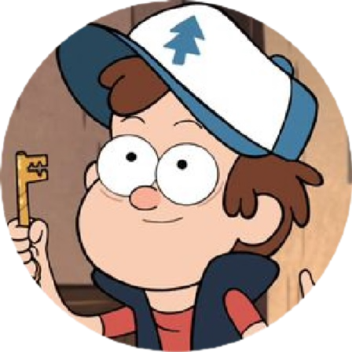
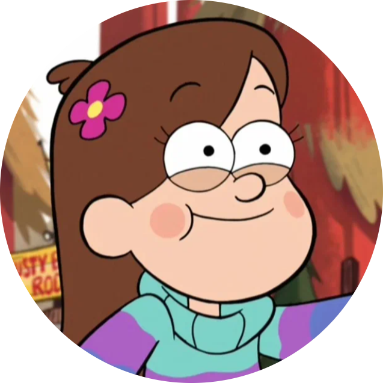
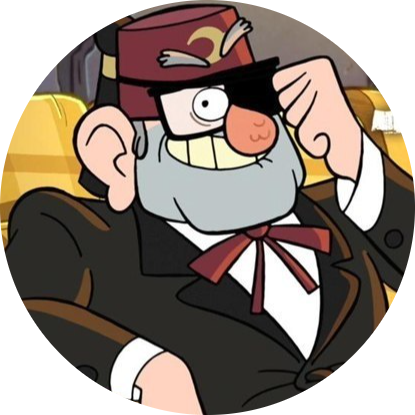
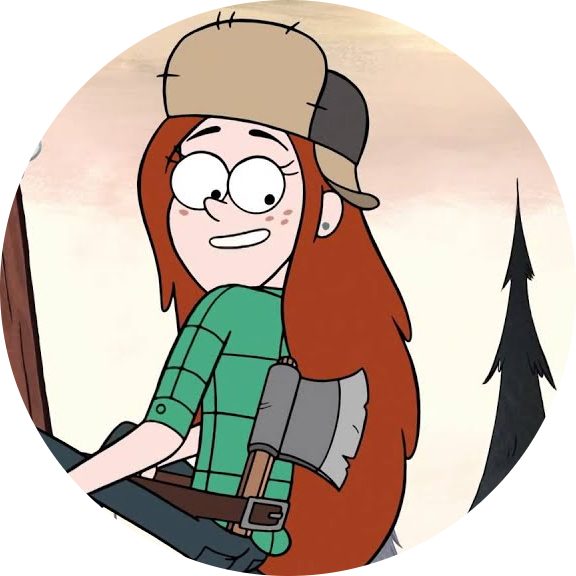
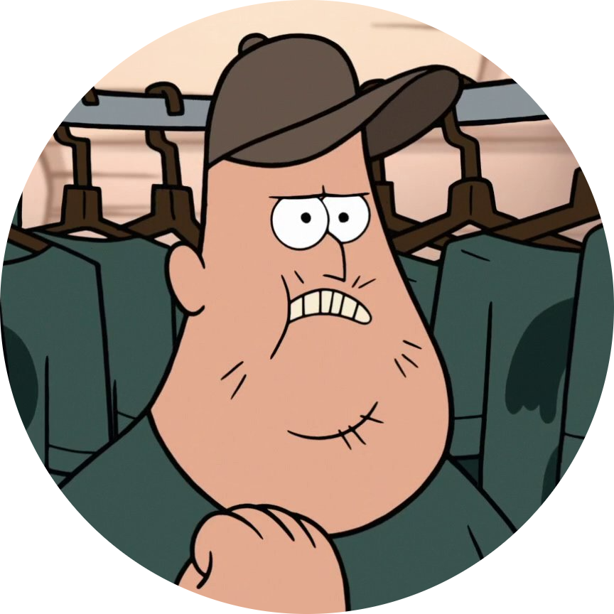

Автор
Сюжет
В мультсериале «Гравити Фолз» рассказывается о приключениях близнецов — мальчика Диппера и девочки Мэйбл, которые проводят летние каникулы у двоюродного дедушки Стэна в вымышленном американском городке под названием Гравити Фолз. Поначалу героям скучно, но вскоре они обнаруживают, что в городе происходит нечто сверхъестественное. Диппер случайно находит в лесу дневник под номером три, автор которого неизвестен. В нём подробно описываются аномалии Гравити Фолз. Диппер сразу решает узнать тайны странного городка и найти автора дневника, но на каждом шагу Диппера и Мэйбл подстерегает опасность. Окрестности Гравити Фолз полны таинственных мест, аномалий и странных существ.
Персонажи
Диппер Пайнс
12-летний мальчик, один из двух главных героев сериала. Является братом-близнецом Мэйбл, младше её на 5 минут. Вооружен дневником № 3, который случайно обнаружил в лесу во время выполнения одного из поручений двоюродного дедушки Стэна.
Мэйбл Пайнс
12-летняя девочка, сестра-близнец Диппера и второй главный персонаж истории. Неисправимая оптимистка. Имеет отличное чувство юмора и часто подшучивает над Диппером. Добрая и чуткая, несмотря на её несерьезность и легкомыслие. У Мэйбл есть домашний поросёнок по имени Пухля
Дядя Стэн
Двоюродный дедушка Диппера и Мэйбл, которого они зовут дядей. Резок и эгоистичен. Он работает и живёт в Хижине Чудес. Прирожденный продавец, всегда пытается создать зрелищное шоу. Он часто посылает близнецов на то, что они считают возмутительным и непредсказуемым поручением, но он защищает их и любит безоговорочно.
Вэнди
Добрая и крутая 15-летняя девушка, которая работает в Хижине Чудес. Дружит с Диппером, Мэйбл и Зусом. Относится к Дипперу как к другу, в то время же зная, что он в неё влюблён. Её отец — Дровосек Дэн, один из местных лесорубов Гравити Фолз.
Зус
22-летний мастер и постоянный сотрудник Хижины Чудес, как и Венди. Друг Диппера и Мэйбл. Он довольно неуклюж, и часто делает ошибки. Несмотря на это, он имеет широкий спектр талантов, в том числе машиностроения, диджеинга и пинбола. Живет с бабушкой, т. к. его отец не посещал Зуса с момента его 12-го дня рождения, лишь присылая открытки.
Интересные факты
1. Алекс Хирш – создатель «Гравити Фолз», многое взял из собственной жизни. Его сестра в детстве хотела иметь ручного поросенка, но мечта так и не оказалось воплощенной в жизнь. В сериале Мэйбл, как олицетворение сестры Хирша, завела личного ручного поросенка.
2. Зрители стали замечать появляющиеся цифры 618 и букву H на стенах, вокруг дома. 6/18 – день рождения создателя «Гравити Фолз», что касается буквы, это отсылка к фамилии автора.
3. Первоначально «Гравити Фолз» должен был выйти как 3D мультик. Однако модельки не получились бы такими милыми, приятными глазу, как если бы были нарисованы в классическом стиле, поэтому мультик было решено оставить рисованным, а не смоделированным с помощью компьютерной графики.